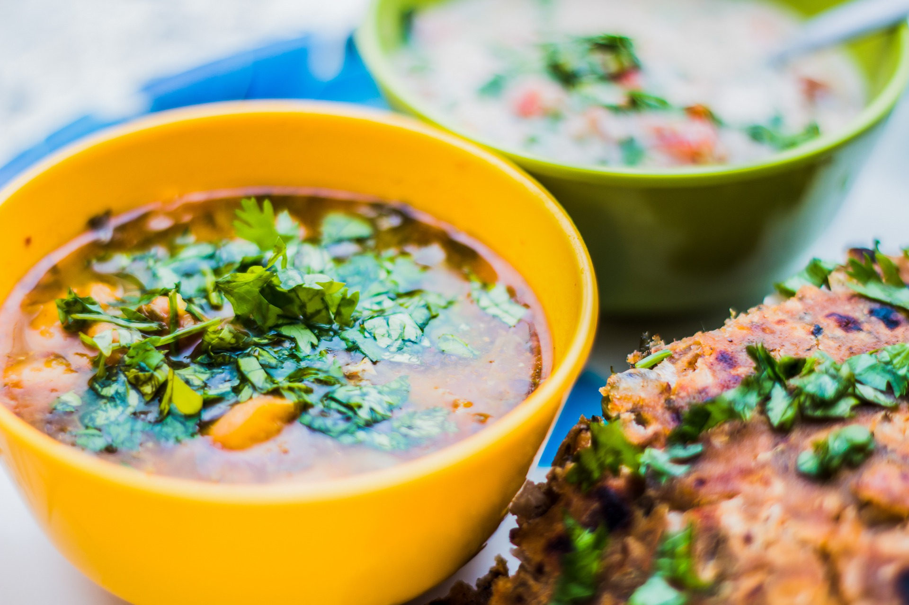
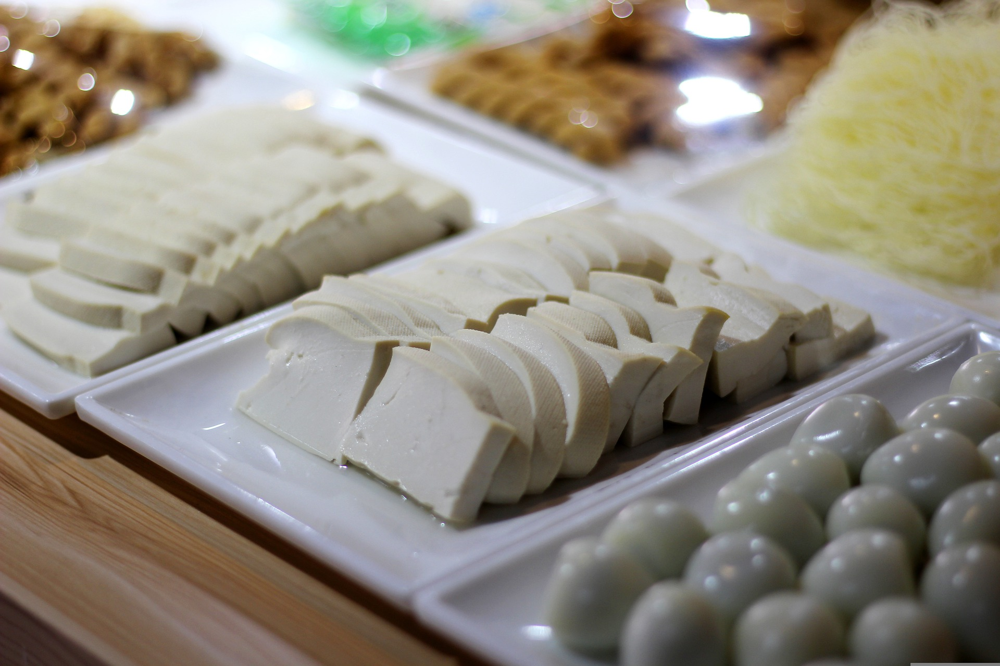
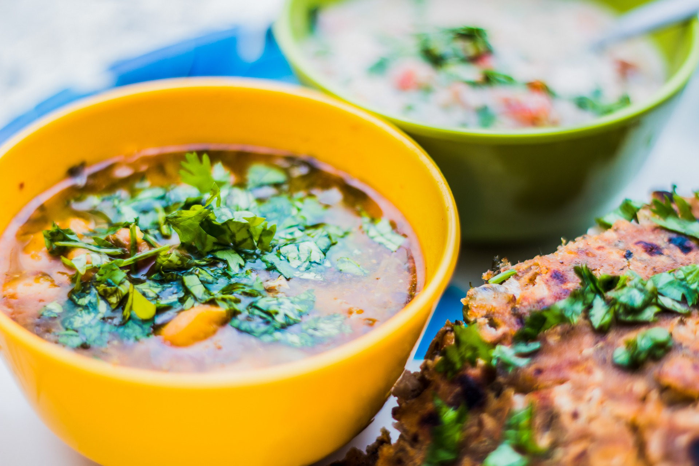
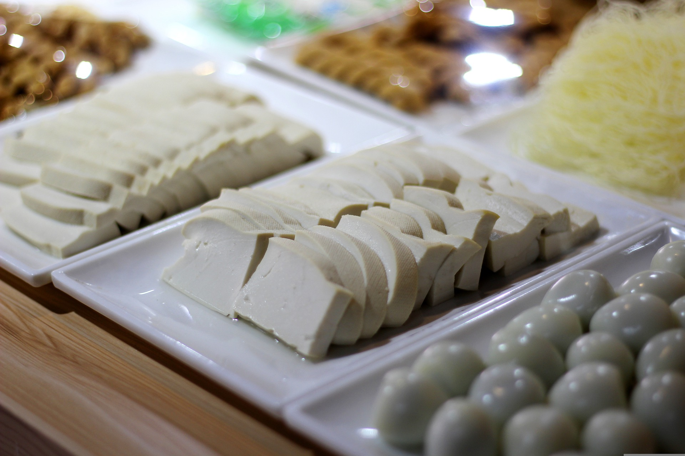

In the street of Seoul
This short time-lapse video is set at night in a busy street in downtown Seoul and shows a street food stalls serving korean pancakes to passerbyers. It illustrates an important aspect of korean food culture: the simple but flavoursome cuisine made and sold by street vendors.
 


